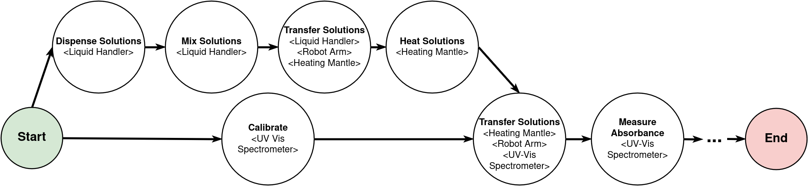

Protocols#
A protocol is a directed acyclic graph of tasks. Dependencies set execution order, and References pass values, devices, resources, and files between tasks.

Define a Protocol#
Place protocol.yml in protocols/<protocol_name>/ inside an EOS package.
Add optimizer.py only when the protocol supports Campaigns with optimization.
This example uses the multiplication tasks from the bundled example package:
type: optimize_multiplication
desc: Find parameters whose multiplied value is 1024
labs: [multiplication_lab]
tasks:
- name: mult_1
type: Multiplication
devices:
multiplier:
lab_name: multiplication_lab
name: multiplier
parameters:
number: eos_dynamic
factor: eos_dynamic
- name: mult_2
type: Multiplication
dependencies: [mult_1]
devices:
multiplier: mult_1.multiplier
parameters:
number: mult_1.product
factor: eos_dynamic
- name: score_multiplication
type: Score Multiplication
dependencies: [mult_1, mult_2]
devices:
analyzer:
lab_name: multiplication_lab
name: analyzer
parameters:
number: mult_1.in_number
product: mult_2.product
type identifies the protocol definition. Each execution has a separate protocol run name.
labs lists the laboratories available to its tasks.
Task Fields#
nameidentifies the task within this protocol.typeselects a task specification.dependencieslists tasks that must finish first.parametersoverrides task defaults.eos_dynamicrequires a value from the submission or optimizer before the task can run.devicesandresourcesassign specific instances, request dynamic allocation, or reference an earlier task’s allocation. See References and Scheduling.filesreferences earlier task output files. See Tasks.durationsupplies the expected execution time in seconds for scheduling.
See Color Mixing for a larger protocol with device allocation and resource movement.
Conditionals (run_if)#
Add a run_if field to a task to make it conditional.
The task runs only if the expression evaluates to True, otherwise it is skipped.
- name: reanalyze
type: Analyze Color
run_if: score_color.loss > 0.2
dependencies: [score_color]
Expressions reference earlier task outputs as task_name.output_name.
Referenced tasks must be ancestors of the conditional task.
Supported syntax:
Comparisons:
==,!=,<,<=,>,>=Boolean operators:
and,or,notLiterals: ints, floats, quoted strings,
True/False
run_if: prep.product >= 0 and prep.product <= 100
run_if: not calibration.passed
run_if: mode.setting == 'high' or sample.count >= 3
Expressions must return a boolean and are validated at load time. Negative numbers are allowed. Binary arithmetic, function calls, indexing, and chained attribute access are not.
Skips propagate: a task is skipped if all of its dependencies were skipped, or (for a conditional task) if any task its
run_if references was skipped.
A task with at least one non-skipped dependency still runs, enabling fan-in convergence across conditional branches.
Branching and fan-in: give branches complementary conditions so exactly one runs, then converge on a task depending on both. To read the output of whichever branch ran, set a parameter to a fan-in list of references:
- name: measure
type: Measure
dependencies: []
- name: heat
type: Heat
run_if: measure.temperature < 50
dependencies: [measure]
- name: cool
type: Cool
run_if: measure.temperature >= 50
dependencies: [measure]
- name: report
type: Report
dependencies: [heat, cool]
parameters:
reading: [heat.result, cool.result] # fan-in: value of whichever branch ran
Each fan-in reference must point to an ancestor, and exactly one branch must run, so make the branch conditions mutually exclusive.
Optimization#
Define eos_create_campaign_optimizer() in optimizer.py to return constructor arguments
and an optimizer class. See Optimizers for the interface, Beacon Optimizer for
hybrid optimization, and Customizing Beacon to replace Beacon’s default optimizer.